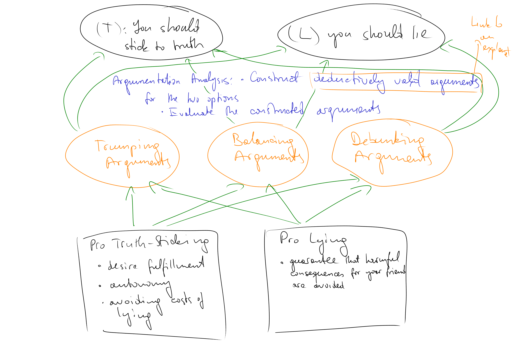

Method of Argumentation Analysis
Example: Should I Lie or Should I not?
Suppose, you are in a situation in which a lie could prevent a bad outcome. Should you lie or should you risk the bad outcome?
- Your friend must be at 2 o’clock at a place in another part of the city for a highly important meeting. She is unfamiliar with the city and needs your skills to advise her on how to get to the meeting place. She asks you to tell her when the latest public transport connection leaves by which she will be at the meeting place right on time.
- The last connection that will get her to the meeting on time leaves at 1.30. The next one leaves 30 min later – meaning that if she misses the 1.30 connection, she will miss the meeting. The one earlier leaves at 1 o’clock meaning that she will waiting time of about 30 minutes at the meeting place.
- You know that your friend has a tendency to miss the connections she intends to catch. She often sees the train just driving away from the station.
- You have the following options:
- Truth-sticking option: You tell your friend that the last train leaves at 1.30 and that the next departs only 30 minutes later implying that she will miss the meeting if she misses the train. You add that you strongly recommend her to take a connection earlier.
- Lying option: You tell your friend that the latest public transport connection leaves at 1 o’clock and will bring her to the meeting place about 30 minutes before the meeting starts.
- Let us assume that there are no other options for you (in reality, there might be other relevant options: telling the truth and than making your friend leaving on time for the last train. For simplicity, let us bracket these additional options.)
- You must decide which of the two options to choose: to stick to the truth or to lie?
Argumentation Analysis: it’s Idea

You are facing the following argumentatiive problem:
- To decide between the two exclusive options for action (T!) and (L!), you must balance the prima facie considerations in favour of the options.
- Argumentation Analysis supports you in clarifying the process of balancing:
- Find/construct a general principle which allows a deductively valid inference from the premises (containing one or all prima facie reasons) to a conclusion (recommendation for one of the options for action)
- Evaluate the premises of the constructed arguments regarding their plausibility
List of prima facie reasons:
| pro truth-sticking (contra lying) | pro lying (contra truth-sticking) |
|---|---|
| By telling the true departure time, your friend gets the information she wants to have (her desires are best satisfied) | By telling that the earlier connection is the last one you avoid for sure that your friend misses an important meeting, i.e. you avoid that she is significantly harmed. |
| By telling the truth, you avoid the costs of lying: mistrust in the relationship with your friend, remorseful feelings etc. | |
| By telling the truth, you respect your friend’s autonomy (i.e. her ability to make own decisions) |
Linked sub-sides:
Sub-Side Argumentation Analysis (?)
Argumentation Analysis: Construction of Arguments
Construction of arguments is a creative task which involves several trial-and-error attempts. There is a formal requirement:
- The formal requirement is necessary but not sufficient for a plausible argument: we can find a large number of principles which guarantee a deductively valid inference to one of the options for action. These principles differ, however, in their plausibility, as the exmaples below demonstrate.